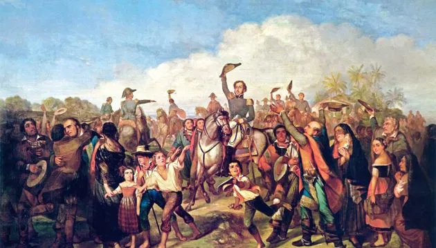
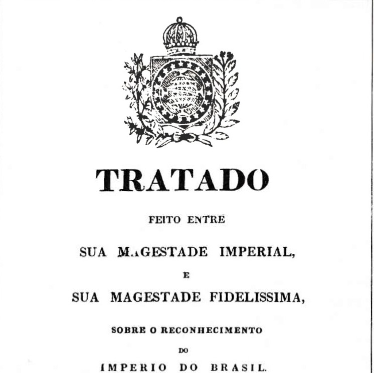

Década de 1820

Independência do Brasil
A Independência do Brasil foi proclamada em 7 de setembro de 1822, pelo então Príncipe Regente, Dom Pedro de Alcântara. Esta ocasião também é chamada de "Grito de Independência", pois, segundo a tradição, Dom Pedro teria dito em alto e bom som a frase "independência ou morte" à guarda que o acompanhava às margens do riacho Ipiranga, em São Paulo. Contudo, não há um consenso entre historiadores quanto a veracidade desse grito. No dia 1º de dezembro do mesmo ano, D. Pedro foi coroado imperador do Brasil, com o título de D. Pedro I, posto que ocupou até o ano de 1831.

Constituição de 1824
A Constituição de 1824, outorgada em 25 de março de 1824, foi a primeira Constituição do Brasil, marcando um momento crucial na história política do país. Ela foi elaborada em um contexto de tensões políticas, onde as autoridades brasileiras, recém-independentes de Portugal, enfrentavam desafios internos para estabelecer uma estrutura de poder clara e sólida. A Constituição de 1824 foi criada com o objetivo de consolidar o império de Dom Pedro I, que, após a independência, buscava assegurar sua autoridade e garantir sua autonomia como imperador.

Tratado - Brasil x Inglaterra
Em 1826, o Brasil e a Inglaterra assinaram um tratado importante, conhecido como Tratado Brasil-Inglaterra, que foi firmado em 25 de março daquele ano. Esse tratado teve como objetivo consolidar as relações diplomáticas e comerciais entre os dois países, estabelecendo acordos sobre a proteção dos direitos britânicos no Brasil e favorecendo o comércio britânico no território brasileiro. O Tratado Brasil-Inglaterra de 1826 teve, portanto, grande importância para a política externa brasileira, marcando uma etapa no processo de consolidação da independência do Brasil e sua inserção no sistema internacional da época.